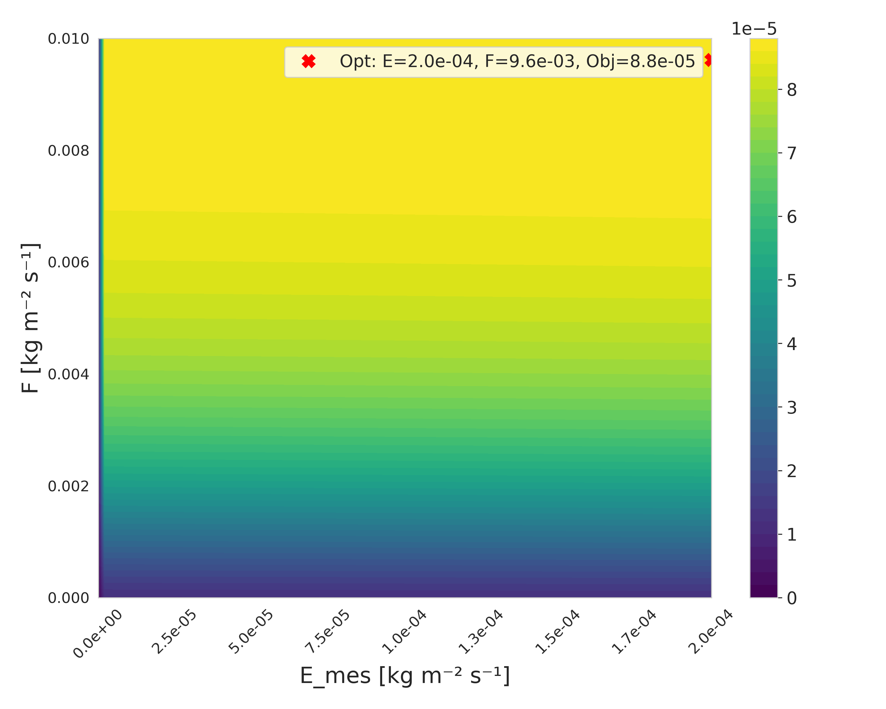
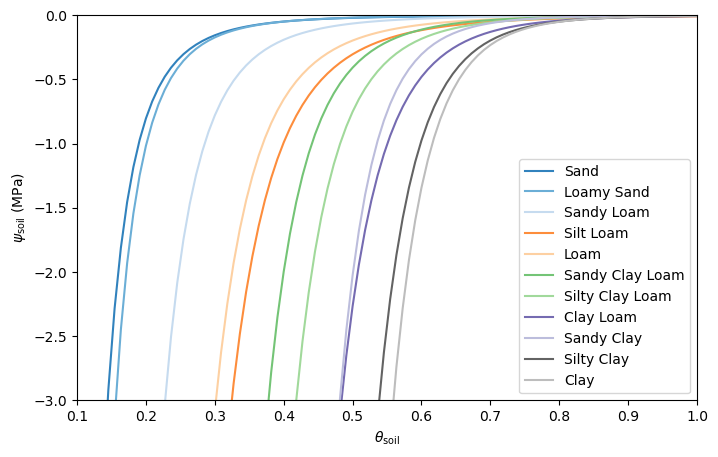
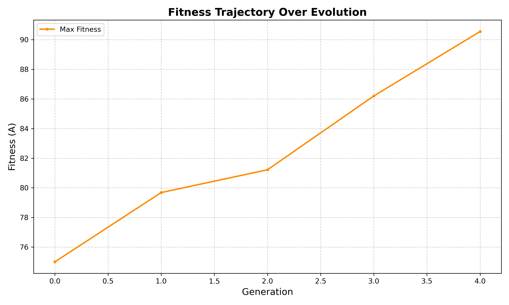
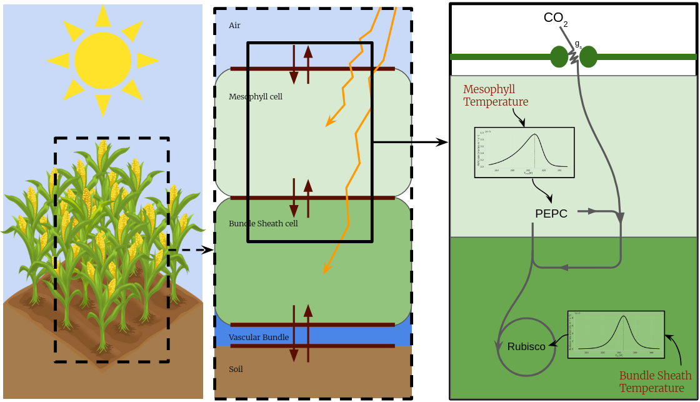

Performance landscape
Archived output from the coupled research workflow. The marked optimum depends on the model version, constraints and scenario used for that analysis.
Protected research · public overview
This page describes the scientific scope of an unpublished C3–C4 research programme without publishing the executable model, full equations, parameterization, calibration files, or source code.
How do carbon fixation, photorespiration, water transport, heat exchange, resource allocation and leaf anatomy jointly determine which phenotypes along the C3–C4 continuum are physiologically viable under changing environments?
Intermediate physiology is treated mechanistically rather than as a mandatory named stage. Photorespiratory mechanisms such as C2 may be included when they are needed to represent a biologically supported intermediate, but they are not the organizing target of the project.
The visual outputs remain public even though the equations and executable research core are protected.

Archived output from the coupled research workflow. The marked optimum depends on the model version, constraints and scenario used for that analysis.

Water-retention relationships used to reason about soil-water availability and hydraulic forcing without publishing the protected solver equations.

Retained as a project output. A numerical performance trace is not by itself a biological evolutionary trajectory.

High-level visual summary of the thermo-hydraulic problem. Detailed equations, parameterization and unpublished development logic remain protected.
The detailed equations, parameter registry, calibration strategy, unpublished hypotheses and executable scientific core are active research material. They are intentionally not distributed through the public website or public repository tree. Public figures and descriptions are therefore summaries, not sufficient specifications for reproducing the unpublished model.
Dr. Chilperic Armel Foko Kuate leads the project and scientific integration. Jérémie Muller-Prokob and Yvonne Danisch are main collaborators; Yvonne made a substantial bachelor-thesis contribution to implementation, model execution, validation and analysis. Antonio Rigueiro and Jonas Brass are research collaborators, and Martin J. Lercher provides PI supervision and the research environment.